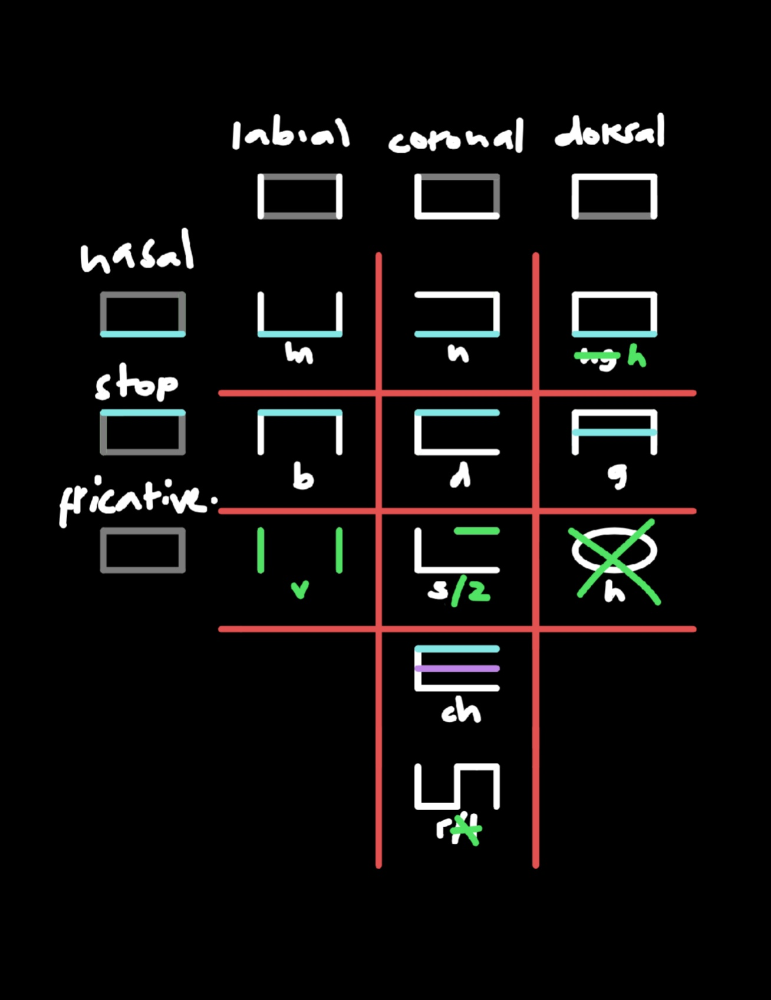

MIRCHO, ANDITS HISTORY
Speakers write the language casually using brushes on papers and/or scrolls. They use Mircho, a vertical alphabetical writing system.
I'll be explaining how it works in the next part, but for now, I'll be babbling about how Mircho came to be. I treat the changes I make in working with the conlang and the conscript as actual changes that the language has "gone through" in the conworld.
Two years ago, I was just bored.. Nothing special, really. It just popped into my head that I'll make my "own alphabet". At that time, I previously have made two, but then I end up forgetting, so yeah, I'm making another one.
Guess what I ended up with, it's the typical make-a-custom-shape-for-a-letter alphabet. I was done, then I was bored again.
I wasn't satisfied, I had to work on another one after that. I want to make something unique, I have the whole summer break to work on it. I decided to just choose some sounds, not too many. Interestingly, I ended up choosing mostly voiced consonants, I really like how they sound, and just three vowels - a, i, o.
At first, I was going for a featural alphasyllabary, I was planning to make a version u mean rip-off? of Hangul where it's just the sandwich stack, and syllables go down vertically.
hangul structure with letters stacked like a sandwichor just dominantly, at least. I remember considering to include a placeholder, but I dropped it anyways.
 my idea for a placeholder before
my idea for a placeholder before
Hangul is featural, following the shapes of the speech organs.
However, I realized that as long as sounds with similar features have a common feature in the script as well, it is still featural. right? I dont wanna just follow the shapes of the speech organs as well because it'll only end up as Hangul.
I started making the glyphs, all broad and short. The template for the glyphs is a laying-down rectangle.
Know that this is just what I remember it was. Others are just changing the form a bit. I ended up not using the /ŋ/ sound so I gave the glyph to /h/. Green indicates the changes or occurences made when I changed the form of the script a bit (more on that later). The glyph for /v/ actually occured to me because of this change. This change also made it possible to write /z/ by adding an additional stroke to /s/. The glyph for /tʃ/ is just /d/ with an additional stroke inside as well.
For the vowels, I just made it similar to Hangul vowels, just that there are no vertical ones. I also had to make a different system for adding glides. Here are the basic ones:

It looked too much like Hangul tho. I don't want others to assume I'm learning Korean because of the K-Pop trend. I already knew about Hangul even before that, and I was really fascinated of how it works. I just have to know the glyphs, and I'll already know how they'll be put together into syllables.
But it has to be unique in a way. Hangul (and Mircho as a result) is so geometric so what I did is I changed the angles of the glyphs, and added some touch of Chinese aesthetics in them some time after.

Lines became curved, it added some flavor onto it. It also made some glyphs possible. This change made the /v/ glyph possible, based on the two strokes at the top of 公, 分, 分, as well as the additional tiny stroke in /z/ for voicing, and more like punctuation and the placeholder, you know, Chinese has a lot of those tiny strokes, 火, 汉, which I like.
The placeholder was under constant changes as well. It went from a vertical line, to Hangul's ㅇ, to an /h/ glyph with an additional stroke over it.

One day, I realized "Alphasyllabary? letters are stacked like a sandwich.. syllables are stacked like a sandwich as well.. wait, isnt that just an alphabet? letters next to each other, just that the flow is vertical".
I couldn't really transliterate from English effectively because of its limited sound inventory, so I had to make a conlang for it!
That is how Mircho and Mir-an came to be, at least this is what I remember so far.
WRITINGIN MIRCHO
In this section, I'm going to discuss how Mircho works and how to write with it.
People of Mir write Mircho using brushes on scrolls/papers, they're not really strict with the stroke order. However, the blocky version of Mircho (the old version) is also used in carvings to make it easier to carve compared to the curvy, calligraphy style used on paper. This blocky version is also a very important part in Voncho, more on that later.
Mircho is written left to right in vertical columns running from top to bottom.
CONSONANTS
Here are the consonants.
As you can see, to write the /z/ glyph, you add an additional stroke to the /s/ glyph. The silent placeholder is written by adding a stroke to the /h/ glyph as well.
The placeholder is placed necessarily with words that start with vowels which vertical stroke/s is/are on the horizontal stroke/s, such as the glyphs for /a/, /ja/, /aj/, etc. For other vowels, however, the placeholder is not necessary, placing it can show formality.
VOWELS
Here are the vowels, and the permitted diphthongs and triphthongs.
To make rising dipthongs, you do this:
-with /j/, you add a horizontal stroke;
-with /w/, you add a vertical stroke.
There is an exception, however. Just simply adding a vertical stroke to the /i/ glyph to make it /wi/ will just result in either the /a/ or /o/ glyphs. Instead, /wi/ starts with two horizontal strokes, then a vertical stroke is added in between them.
To make falling diphthongs (only with /a/), you add an additional stroke below the rising counterparts.
The glyph for the triphthong /waj/ is written by adding both a horizontal and a vertical stroke to the /a/ glyph.
PUNCTUATION
One punctuation mark is this diagonal stroke that can indicate strong feelings and high volume, or, if joined with the question particle /do/, can also indicate a question. Just think of this as an "exclamation mark".
This diagonal stroke can be placed either at the start or at the end of the clause or sentence. This depends on which side is "flatter". (Most consonants are naturally flat.)
In the example above, since the vowel is "flatter at the top" (horizontal stroke at the top of vertical ones), the placeholder isn't necessarily used, and this "exclamation mark" can take its place. Of course, you don't shout at officials anyways. For this one, I guess it looks better at the top than at the bottom, right?
If the case tho is that the placeholder is necessary (when vertical strokes are on the horizontal stroke/s) or if it's a falling diphthong (with a small extra stroke), this "exclamation mark" join those extra strokes.
The goal here is just that we dont mix the "exclamation point" with the vertical strokes of the consonants and vowels. Also, as much as possible, two "exclamation marks" between clauses/sentences should be avoided.
Again, when paired with a question particle, like /do/, this "exclamation mark" turns into a "question mark" to indicate questions.
Space is very important too. Phrases, clauses, and/or sentences, are separated by space.
Mircho uses hook-brackets-like for quotation just like in Japanese. (but it's always top-left and bottom-right corners, whether vertically or horizontally in the romanization)
The rest are jobs of particles, such as making closed and open lists, connecting clauses and sentences, and indicating the mood of a clause.
THE VOWELPROBLEM
Was the vowel and polyphthong system fine??
These vowels, diphthongs, and triphthongs, however, when they come in contact with other vowels, diphthongs, and triphthongs in neighbouring syllables, create a tiny bit of a problem.
yes
Take a look at this..
Here, you can see that the vowels (and polyphthongs) next to each other create ambiguity(?). The second one doesn't make sense tho right? but still, it might be confusing.
I also just don't like how they look together..
I guess it just doesn't work for me..
Here's what I did..
I made another set of glyphs just for these. This is a cropped part of the picture of the conscript at that time. (so lazy) Look at the full image here. Below the glyphs, are corresponding romanizationsSee here.. (sorry)
However, even I can't remember much of these. I end up redoing this system all over again. I guess the picture was idk, the third or fourth version? maybe more?
I guess this is due to the fact that this "system" isnt really systematic at all. All I did was just assign possible glyphs (including those with three horizontal strokes) to them according to how they looked originally. It isn't even consistent because others are just assigned arbitrarily.
As you can see, this "solution" isn't really the solution. What I do currently is to insert the /ʔ/ glyph between them without a sound. It's like it's used as a placeholder for syllables that aren't the first. This looks and feels much simpler, and consistent. What do you think?